GPIO & Interrupts
We created for testing 2 AXI_GPIO objects: one for inputs and one for outputs. Then we enabled interrupts for the AXI_GPIO used for inputs and connected it to the interrupt controller.
Hardware Side
Add AXI_GPIO Block
- First step is to ad the IP. right click on the mouse and choose ADD IP. Then you need to choose the wanted IP and add it to the design. 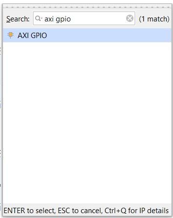
- Set all inputs/all outputs for simple use. 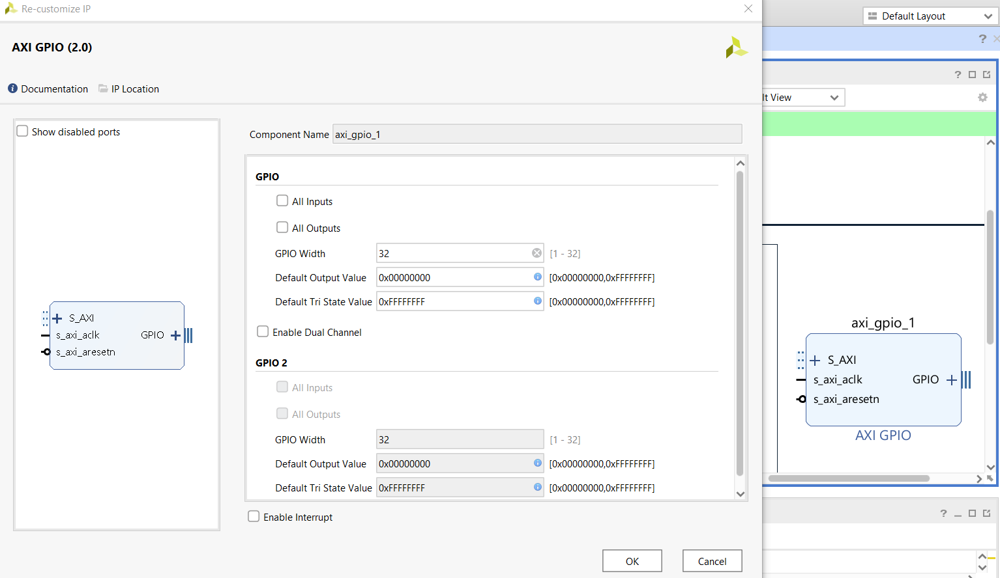
- Use “Run Connection Automation” (it will add this part that we will remove later). 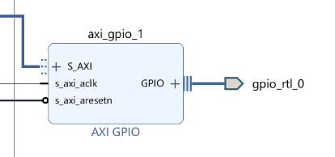
Connect to External GPIO (pins and etc.)
- Press the ‘+’ near the word GPIO and then right-click on the line under and choose make external. 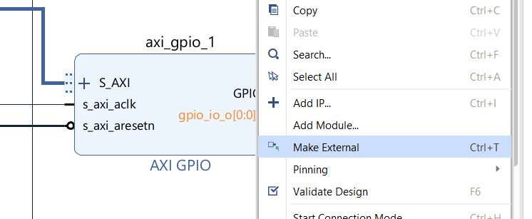
- Now we can delete the wire and pin connected to the GPIO name (in orange). 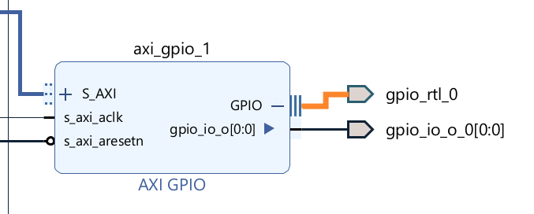
Define the Physical Connection
- Add a source file:
- Go to ‘Source’ -> ‘Constraints’ and then right-click and choose ‘Add Sources’.
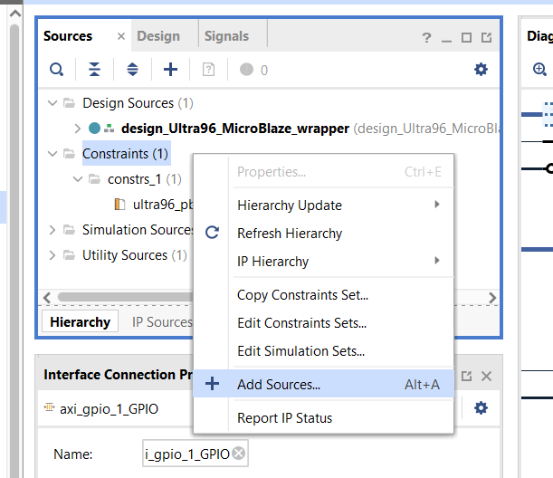 - Choose ‘Add or create constraints’.
- Then choose create file.
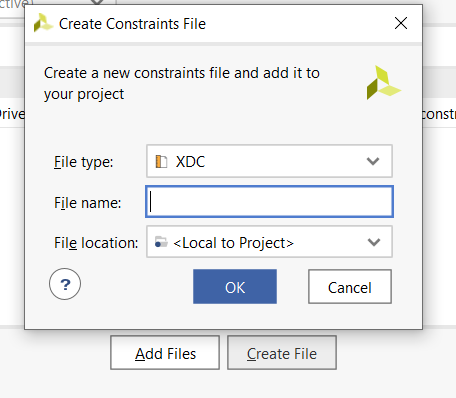 - Click ‘ok’ and then ‘finish’.
- Go to ‘Source’ -> ‘Constraints’ and then right-click and choose ‘Add Sources’.
- Now open the file and add the code to config the board.
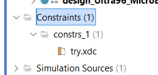
How to Connect the Ports from the XSA to GPIO
- We will define 2 things for each port: their type (voltage) and actual connection (need to find the pin mapping of the board; D7 is an example):
The commandset_property IOSTANDARD LVCMOS18 [get_ports {pin_out[0]}] set_property PACKAGE_PIN D7 [get_ports {pin_out[0]}][get_ports {pin_out[0]}]returns the object of thepin_out[0](the name we chose for the port).
Example:
An example of a project with 2 AXI GPIO devices. one for input ports and one for output ports. 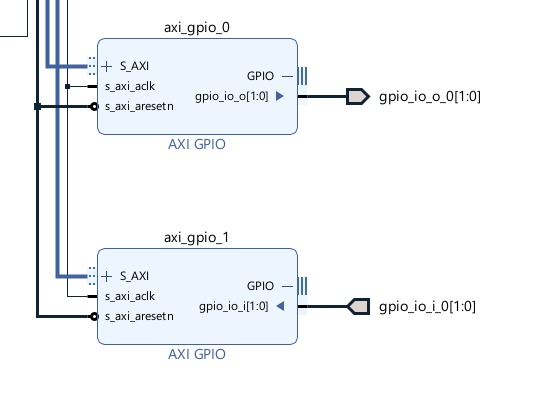 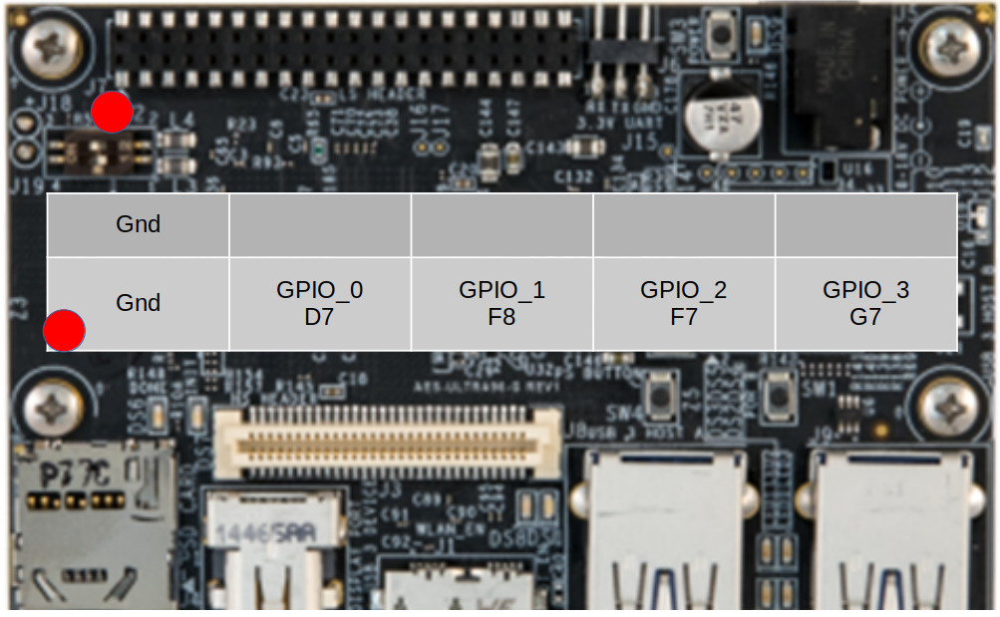
The corresponding xdc file
# HD_GPIO0 / connector 3
set_property PACKAGE_PIN D7 [get_ports gpio_io_o_0[0]]
set_property IOSTANDARD LVCMOS18 [get_ports gpio_io_o_0[0]]
# HD_GPIO1 / connector 5
set_property PACKAGE_PIN F8 [get_ports gpio_io_o_0[1]]
set_property IOSTANDARD LVCMOS18 [get_ports gpio_io_o_0[1]]
# HD_GPIO2 / connector 7
set_property PACKAGE_PIN F7 [get_ports gpio_io_i_0[0]]
set_property IOSTANDARD LVCMOS18 [get_ports gpio_io_i_0[0]]
# HD_GPIO3/ connector 9
set_property PACKAGE_PIN G7 [get_ports gpio_io_i_0[1]]
set_property IOSTANDARD LVCMOS18 [get_ports gpio_io_i_0[1]]
Connect Interrupts
- Open the AXI_GPIO properties and choose “enable interrupts”.
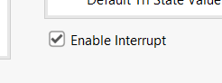 - In our design, the interrupt controller
intr(interrupt request) is connected through the “Concat” object.
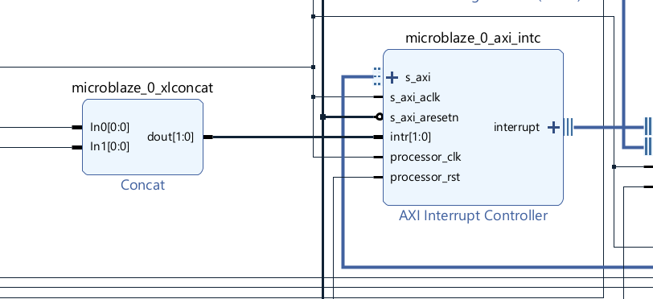 - We will go to the Concat object and add a port. Then we will manually connect the irq pin from the AXI_GPIO to the open In pin.
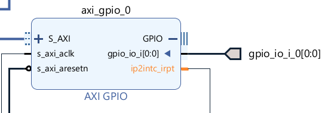 - Then press “Validate design” and you will see the added input to the interrupt controller.
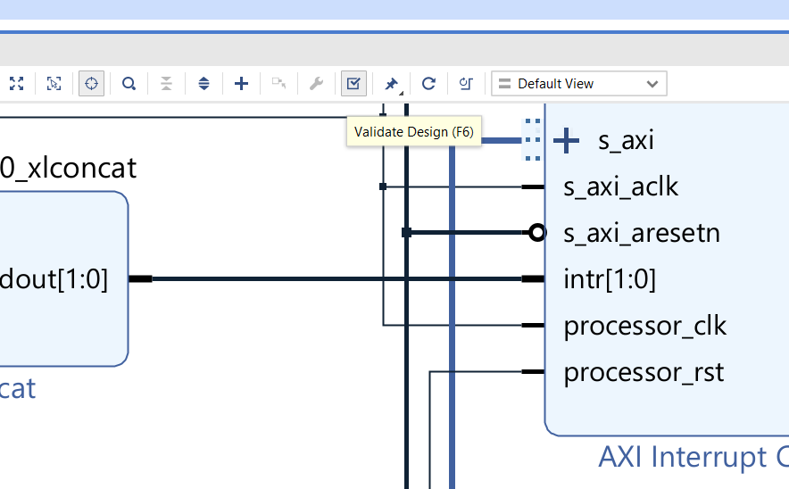
Software Side
After we create a project with the AXI GPIO block we will have some new files we can include (we won’t be able to include these files if there is no AXI_GPIO IP in the XSA file).
Needed Includes
/* GPIO includes */
#include "xil_io.h"
#include "xgpio.h"
Defines of the AXI GPIO IPs
We had one IP for inputs and one for outputs. The LED defines are for choosing which pins to use. The channel is in case you enabled 2 channels in the Vivado for the AXI_GPIO object. We found the ID in “/<project_name>/export/<project_name>/sw/<project_name>/freertos10_xilinx_microblaze_0/bspinclude/include/xparameters.h”.
/* GPIO defines */
#define GPIO_DEVICE_ID_OUT XPAR_GPIO_0_DEVICE_ID // ID of the GPIO object
#define LED 0x01
#define LED_CH 1
#define LED_DEL 10000000
#define GPIO_DEVICE_ID_IN XPAR_GPIO_1_DEVICE_ID
Create Object (“class”) that will Work with the IP
/* GPIO variables */
XGpio Gpio_out;
XGpio Gpio_in;
Initialize and Perform Read/Write
// INIT GPIO OUT OBJECT
Status = XGpio_Initialize(&Gpio_out, GPIO_DEVICE_ID_OUT);
if (Status != XST_SUCCESS) {
xil_printf("GPIO OUT INIT fail!");
}
// Write to GPIO object
XGpio_DiscreteWrite(&Gpio_out, LED_CH, BUTTON_VOLTAGE); // set GPIO to OFF maybe set to 0x01 for as voltage src
// INIT GPIO IN OBJECT
Status = XGpio_Initialize(&Gpio_in, GPIO_DEVICE_ID_IN);
if (Status != XST_SUCCESS) {
xil_printf("GPIO IN INIT fail!");
}
// Read from GPIO object
button_red_1 = XGpio_DiscreteRead(&Gpio_in, BUTTON_CH);
Work with Interrupts
Because we work with an operating system, we need to create a function that will work as ISR and then let the OS do the rest of the work. In general, you need to tell the OS which function will be used as ISR.
Good explanation: FreeRTOS Xilinx MicroBlaze
In general:
- Get the ISR id. You will have the define
XPAR_INTC_0_GPIO_1_VEC_IDunder “/<project_name>/export/<project_name>/sw/<project_name>/freertos10_xilinx_microblaze_0/bspinclude/include/xparameters.h”. - Get the interrupt controller id. You will have the define
XPAR_INTC_0_DEVICE_IDunder “/<project_name>/export/<project_name>/sw/<project_name>/freertos10_xilinx_microblaze_0/bspinclude/include/xparameters.h”. - Declare the function that will be used as ISR.
- Use
xPortInstallInterruptHandlerto set the function as interrupt handler. - Enable interrupt with
vPortEnableInterrupt.
/* Interrupts */
#define INTC_DEVICE_ID XPAR_INTC_0_DEVICE_ID
#define INTC_DEVICE_INT_ID XPAR_INTC_0_GPIO_1_VEC_ID
Status = xPortInstallInterruptHandler(INTC_DEVICE_INT_ID, myInterruptHandler, NULL);
vPortEnableInterrupt(INTC_DEVICE_INT_ID);
Current Problem
These 2 functions are defined in the portmacro.h file with uint8_t as the first argument. In the port.c files, there is a define XPAR_XILTIMER_ENABLED that sets the first argument as uint16_t and that creates the error “undefined reference to xPortInstallInterruptHandler”.
In order to let the function compile, we need to set this var to 0.
Right now the interrupts don’t work.